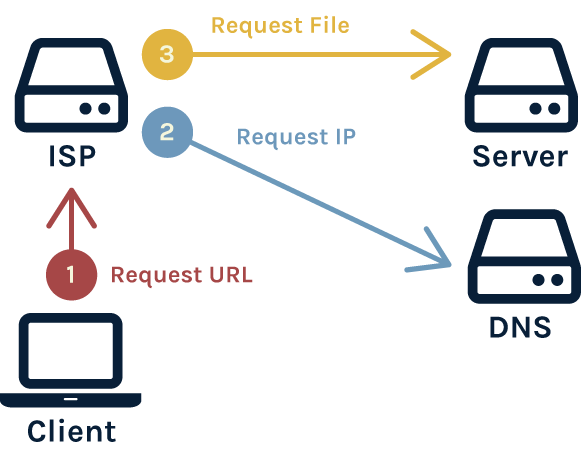
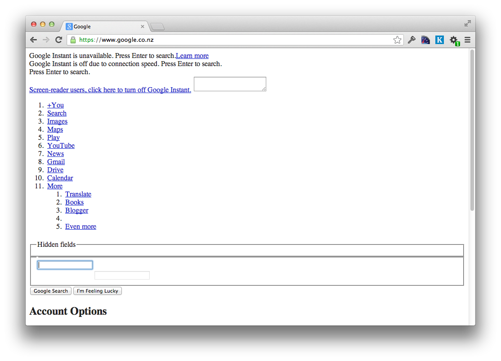
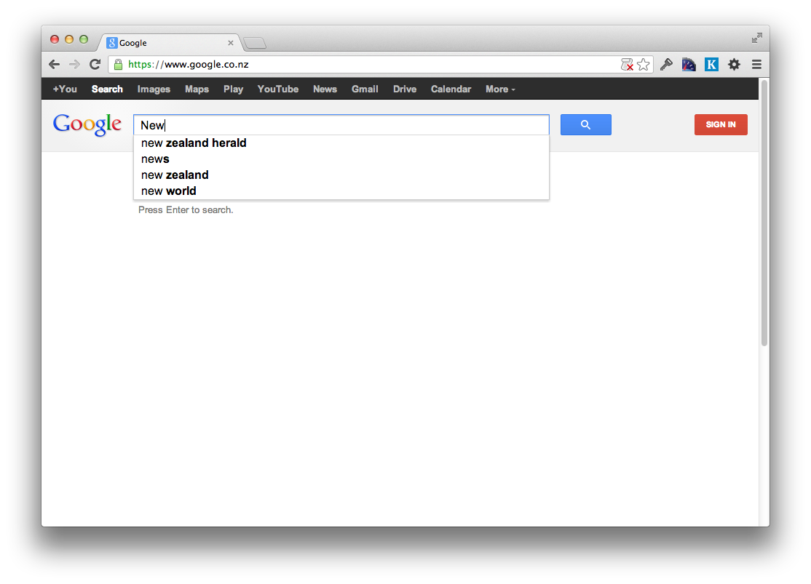
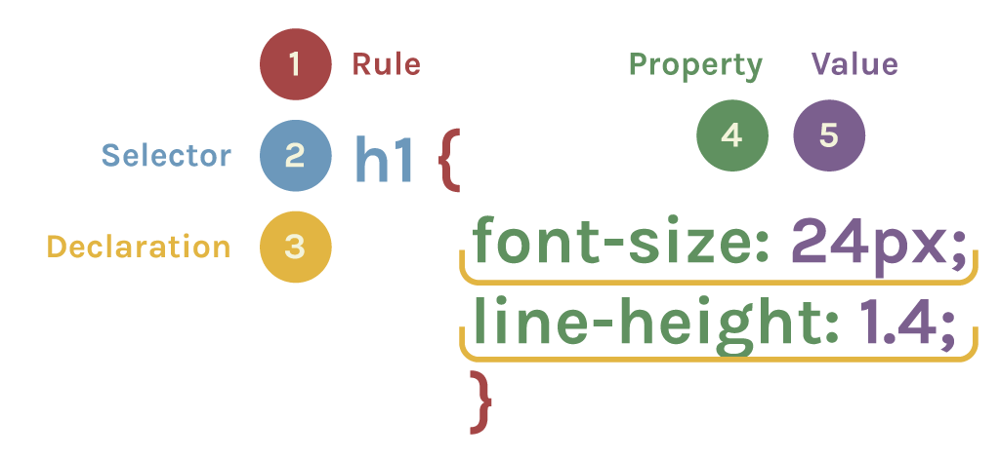
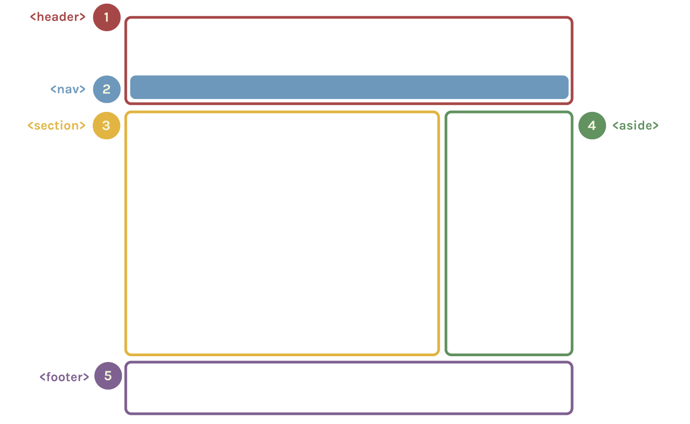

Building the Web
(HTML & CSS)
Development Environment
1. Web Browser
Choose a modern web browser that has good development tools to help make building web pages easier.
2. Text Editor
Although there are plenty of good text editors out there, none will help you learn as you go. Today we'll be using Mozilla's Thimble, a text editor that allows you to see errors as you type HTML and CSS.

Foundations of the Web
What's in a URL
protocol://server/path
- How e.g. http
- Where e.g. gathergather.co.nz
- What e.g. /workshops
What happens?

DNS: A request bounces
How is the web "open"?
There are a number of organisations that exists with the sole purpose of maintaining the "open-ness" of the web. What does that mean? Who are they?
Net Neutrality
All networks are equal
There are political and economical gains to be made by treating networks differently:
- An ISP can charge extra to allow access to your favourite website, e.g. Facebook
- A government can censor access to information, e.g. North Korea
- Telecom, who owns the Souther Cross Cable, could slow down other ISPs' international requests
Why could this be a bad thing?
An ISP can charge extra to allow access to your favourite website, e.g. Facebook
A government can censor access to information, e.g. North Korea
Telecom, who owns the Souther Cross Cable, could slow down other ISPs' international requests
The solution
Organisations, like InternetNZ, promote the open web. This means that ISPs must treat all requests equally. They can't favour one network over another.
Web Standards
A basic webpage
A webpage is mainly built using 3 web languages.
HTML (Hypertext Markup Language)
is the markup language.

It should define the semantic structure.
CSS (Cascading Style Sheets)
is the style sheet language.

It should define the appearance.
JavaScript
is the programming language.

It should define responses to user interaction.
Dive into HTML
The structural layer
What is HTML?
HTML was created for web browsers to easily read (not humans).
So this makes perfect sense to a web browser:
<!DOCTYPE html><html><head><title></title></head><body></body></html>
What is HTML?
Whitespace through indentation (spaces) make your more HTML human-readable.
<!DOCTYPE html>
<html>
<head>
<title> </title>
</head>
<body>
</body>
</html>
(Later on, you might also notice how automatic colour coding in your code editor helps a lot too.)
HTML tags
The structure of a webpage is defined by HTML tags. Angled brackets denote tags, like this:
<tag>
<a href="#">Gather</a>
- Tag Name
- Attribute Name
- Attribute Value
- Text Node
HTML tags
Tags typically come in pairs — an opening tag and a closing tag with a forward slash:
<tag></tag>
Some examples:
<!DOCTYPE html>
<html>
<head>
<title> </title>
</head>
<body>
</body>
</html>
HTML tags
Tags can be "nested" within other tags, like this:
<tag><tag></tag></tag>
(This relationship is often referred to using the terms "parent" node and "child" nodes.)
For example:
<title> is nested between opening and closing <head> tags so <head> is the parent node and <title> is the child node.- Going further,
<head> is also (at the same time) a child node of <html>.
- While
<html> is the always the "root" node and has no parent nodes.
- Notice too that
<head> and <body> are on the same level. They are both child nodes of <html>.
<!DOCTYPE html>
<html>
<head>
<title> </title>
</head>
<body>
</body>
</html>
<!DOCTYPE html>
<html>
<head>
<title> </title>
</head>
<body>
</body>
</html>
HTML in a web browser
I can View Page Source on any website to see the raw HTML behind the scenes.
HTML content
The human-viewable content of a HTML tag goes in between the opening and closing tags like this:
<tag>Content</tag>
<!DOCTYPE html>
<html>
<head>
<title>Home</title>
</head>
<body>
You are currently looking at index.html.
</body>
</html>
Exercise #1 — Reading the structure of a webpage
Section Formatting
<blockquote> — a quoted section
<article> — a self contained piece of content
<nav> — the navigation of a section
<header> — the header of a section
<footer> — the footer of a section
Exercise #1 — Reading the structure of a webpage
Hierarchy
<h1>, <h2>, etc to <h6> — heading levels 1 to 6
<p> — paragraph
Text Formatting
<em> — Emphasis (often italic)
<strong> — Strong Emphasis (often bold)
Special Types
<ul> or <ol> — Lists
<a> — Links
<img> — Embedded Image
Going deeper
<head> vs <body>
-
What happens when I change the content in the
<title> tag?
-
What's the difference between putting a tag in-between the
<head> tag versus the <body> tag?
Void (or empty) HTML Tags
Void tags don't format content — instead they are used to render or embed objects in our page.
These tags do not come in pairs like h1 or p tags.
This text <br>goes over<br>several lines.
This text
goes over
several lines.
Void (or empty) HTML Tags
Void tags
<hr> — horizontal rule
<br> — line break
<input> — text input boxes
<img> — an image
<hr>
Hello<br>world
<input type="text">
<img src="http://gathergather.co.nz/grumpy_cat.png">
Hello
world

Attributes
Quick review:
- HTML tags define structure.
- Text between opening & closing tags define content.
- Void HTML tags render special objects that are sometimes sort of like content or seem structural depending on the void tag.
Consider the img tag. Not very exciting right?
<p>Kicking up HTML a notch.</p>
<img>
<p>Do you agree?</p>
Attributes
Sometimes we need to define data that we don't see right away but it's used by the browser to help render special content like hyperlinks, images, or video.
Here's that same img tag but now it's using an attribute to tell my webpage where to find a source image:
<p>Kicking up HTML a notch.</p>
<img src="http://gathergather.co.nz/grumpy-cat.png">
<p>Do you agree?</p>
Working with images
<img src="http://gathergather.co.nz/grumpy-cat.png">
src is the attributehttp://gathergather.co.nz/grumpy_cat.png is the value of that attribute
With an img tag, the value of the src attribute tells the browser what the url source of our image is.
Working with images
Tags can have more than one attribute, some required (like src) and others are optional:
width and height tell the browser what dimension to display the image at.
Working with images
For example, without width and height attributes, the browser displays image at original size.
<img src="http://gathergather.co.nz/grumpy-cat.png">
Working with images
Now with a manipulated width and height (about 50% smaller):
<img src="http://gathergather.co.nz/grumpy-cat.png" width="320" height="262">
Working with images
Another optional image attribute:
alt is alternative text to display to visually impaired web visitors using screen readers. It also shows up when there's a "broken image" due to typos or moved files.
<img
src="http://gathergather.co.nz/grumpy-cat.png"
width="160"
height="131"
alt="Grumpy Cat">
Working with images (Group exercise - Part 1)
Code along with me:
- Open
https://thimble.webmaker.org/p/eyj/edit in your browser
- Use the
img tag to embed an image of our fave LOL cat using http://goo.gl/7eSU5 for the value of the src attribute.
- Try changing the text too!
- Save and check out the preview panel to make sure you got it right.
Hyperlinks
The <a> anchor tag is used to tell the browser that we want to link to somewhere else on our site or on the web.
The a tag comes in pairs and the content between the opening and closing tags is what is displayed as the link text (typically underlined).
Visit <a>Gather Workshops</a>.
Visit Gather Workshops.
But wait! This link doesn't take me anywhere!
Hyperlinks
We need a way of setting the URL (e.g. http://gathergather.co.nz/workshops/) that the browser will request when someone clicks on the link.
Once again, we need to use attributes.
Visit <a href="http://gathergather.co.nz/workshops/">Gather Workshops</a>.
Visit Gather Workshops.
href is the attributehttp://gathergather.co.nz/workshops/ is the value of that attribute- And remember that the human-viewable text goes in between the opening and closing
a tags.
Exercise #2 — Writing HTML
- Indentify the semantics in the wireframe
- Sketch out the HTML
- Fill in with dummy content
Ask the volunteers for help if you need it!
HTML reference
CSS basics
Adding some style to your pages
CSS:
Cascading
Style
Sheets
Cascading means the styles of outer elements often apply to the styles of inner elements.
Style means all visual elements of a page, like:
- colour
- position
- size
- borders
- and even interactions like hovering
CSS selectors and properties
Here's a CSS declaration dissected:

Where to put your CSS
CSS can live in two places – an external stylesheet, or at the top of your HTML page
<head>
<style>
Style goes here!!!!!!!
</style>
</head>
<head>
<link rel="stylesheet" href="stylesheet.css">
</head>
Inside stylesheet.css, there is no <style> tag.
Inspecting the DOM
You can use Inspect Element to see DOM (Document Object Model). This is what the browser does with HTML.
(I suggest that you do this yourself any time you see something you like so you can reverse-engineer it.)
Our first selector: body
body is a selector that applies styles to the entire page, and all of its content. All elements in the page will inherit the styles you define.
<head>
<style>
body {
font-family: sans-serif;
}
</style>
</head>
Our first style: background-color
background-color is a property that can be applied to any tag, such as the body.
<head>
<style>
body {
background-color: blue;
}
</style>
</head>
Challenge!
Solve the riddle by changing the page's background colour
Visit http://www.147colors.com/ and check out the different colour names you can use one the web. Find one you like. Hint: try to pick a darker colour!
View https://thimble.webmaker.org/p/tkx/edit in your browser. Your challenge is to change the background colour, so that the answer to the riddle will magically appear!
body {
background: black;
}
Changing the font colour
Take a look at https://thimble.webmaker.org/p/eyv/edit
Now the text is a bit hard to read on the gray background. Because the <body> tag is the highest possible visible HTML tag, the body selector will also allow us to target the font color on the entire page.
body { background-color: gray; color: white; }
Changing the font family
The web has a number of fonts that are considered "web safe". Some of the most used fonts are:
- Arial
- Verdana
- Times New Roman
- Georgia
- Courier
Let's add a bit of contrast to our headers by using the Courier font on them.
h1 { font-family: Courier; }
h2 { font-family: Courier; }
Changing the font family
Not all fonts are installed on all computers so it's recommended that you use a list of fonts. If the first font in the list isn't available, it will try to use the next.
body { font-family: Helvetica, Verdana, Arial, sans-serif; }
(Notice how the font-family for the headers are still Courier? That's the "cascading" part of Cascading Style Sheets in action. Inline styles take precedence, then innermost tags, then outer tags.)
Changing the font size
Font sizes are typically defined in pixels (px) or "ems" (em).
Headers have default font-sizes defined by the browser. Let's override them.
h1 { font-size: 25px; }
h2 { font-size: 22px; }
Changing the font weight
In its simplest form, there are 2 weights:
By default, headers are already bolded. Let's remove the bold by applying the normal font weight on them.
h1 { font-weight: normal; }
h2 { font-weight: normal; }
Formatting CSS
As with HTML, extra whitespace and line breaks add to readability.
Our current CSS can be written like this:
<style>
body {
background-color: gray;
color: white;
font-family: Helvetica, Verdana, Arial, sans-serif;
}
h1 {
font-family: Courier;
font-size: 25px;
font-weight: normal;
}
h2 {
font-family: Courier;
font-size: 22px;
font-weight: normal;
}
</style>
CSS interactions for links
CSS is also able to handle some basic UI interactions in our sites, such as allowing a mouse over or "hover" state on various elements. This is frequently done with items such as links.
As part of your selector, you need to use the :hover pseudo selector.
<style>
a {
border: 1px solid black;
padding: 5px 30px 5px 30px;
background-color: black;
color: white;
text-decoration: none;
margin: 15px 10px 0 0;
border-radius: 6px;
}
a:hover {
color: red;
}
</style>
<a href="http://gathergather.co.nz">Gather</a>
CSS classes
Wait! What happens when we add another link to the page and it's not part of our navigation?
Putting all the styles inline wouldn't be wise...
<style>
a {
border: 1px solid black;
padding: 5px 30px 5px 30px;
background-color: black;
color: white;
text-decoration: none;
margin: 15px 10px 0 0;
}
a:hover {
background-color: purple;
}
</style>
<a href="index.html">Home</a>
<a href="about.html">About</a>
<a href="contact.html">Contact</a>
<p>Follow me on
<a href="http://twitter.com/pearlchen" target="_blank">Twitter</a>!
</p>
CSS classes
If you know that several elements are going to have similiar styles, use CSS classes! Once you define one CSS class, you can apply it over and over again!
- Use a period (
.) to define CSS selectors that are classes.
e.g. .nav_button
- Then apply that class to any element using the
class attribute.
e.g. class="nav_button"
<a class="nav_button">Home</a>
<style>
.nav_button {
font-family: Georgia;
}
</style>
CSS classes
Let's apply a "nav_button" CSS class to our current navigation links:
<style>
a {
border: 1px solid black;
padding: 5px 30px 5px 30px;
background-color: black;
color: white;
text-decoration: none;
margin: 15px 10px 0 0;
}
a:hover {
background-color: purple;
}
</style>
<a href="index.html">Home</a>
<a href="about.html">About</a>
<a href="contact.html">Contact</a>
<p>Follow me on
<a href="http://twitter.com/nzgather" target="_blank">Twitter</a>!
</p>
Exercise #3
Use this time to try applying some of what you've learned to the previous example
- Visit https://thimble.webmaker.org/p/ey9/edit
- Add a class to each link (you can apply a class to more than one link)
- Try changing some of the fonts, colours, and other properties
- Add :hover styles for your links too.
Laying out webpages with CSS
Layout is one of the most challenging things to do in CSS because it requires you to think about the whole picture and plan ahead.
To creating a standard 2-column layout requires us to give dimensions to some of our content, and position it accordingly.

Generic Container Tags
Sometimes content you might want to group together (and treat differently with CSS) shouldn't be defined as a h1 or h2 or even a p paragraph. There are two kinds of generic containers available:
span - An inline container.
Good for highlighting keywords like I did in this bullet.div - An block container.
Much like a paragraph, it creates a line break above and below to create a box.
<div>I'm a div!</div>
<div>I'm another div!</div>
Semantic HTML Tags
Historically, when making non-trivial websites, it required nesting lots of div tags within div tags (within div tags!) like this:
<div>
<div>
<div>Home</div>
<div>About</div>
<div>Contact</div>
</div>
</div>
<div>
Welcome to my blog!
<div>[...Blog Post...]</div>
<div>[...Blog Post...]</div>
</div>
<div>
[...Sidebar Ad...]
</div>
<div>
Copyright 2012
</div>
Semantic HTML Tags
With HTML5, there are an increasing number of semantic tags that better describe larger blocks of content such as: header, footer, nav, section, article, and aside.
<header>
<nav>
<div>Home</div>
<div>About</div>
<div>Contact</div>
</nav>
</header>
<section>
Welcome to my blog!
<article>[...Blog Post...]</article>
<article>[...Blog Post...]</article>
</section>
<aside>
[...Sidebar Ad...]
</aside>
<footer>
Copyright 2012
</footer>
Semantic HTML Tags
There are two reasons we use semantic HTML tags:
- To indiciate the kind of content
- To indicate the structure of the page
This helps web crawlers from search engines like Google or Bing better understand your content.
Assigning widths
It is important to know the overall width of your site so you can select column widths for the main <section> and the <aside> sidebar that will make sense.
Let's go ahead and set the <header> and <footer> to be 960 pixels wide. We'll add a gray border too, so we can see what's going on.
header {
width: 960px;
border: 1px solid gray;
}
footer {
width: 960px;
border: 1px solid gray;
}
Assigning widths
If our site is 960px wide, we need to ensure that our columns don't exceed 960 - including margins! (e.g. 640 + 20 + 300 = 960)
section {
width: 640px;
padding: 30px;
border: 1px solid gray;
}
aside {
margin-left: 20px;
width: 300px;
border: 1px solid gray;
}
PRO TIP: Historically, padding wrecked havoc on our math. To avoid headaches, use the box-sizing property for every website you make to make sure your math adds up.
/* apply a natural box layout model to all elements */
* {
-moz-box-sizing: border-box;
-webkit-box-sizing: border-box;
box-sizing: border-box;
}
CSS ids
CSS classes are great when you want to re-apply the same style to multiple HTML elements but sometimes you need to only target an HTML container once. This is where an ID is useful.
- Use a hash (
#) to define CSS selectors that are IDs.
e.g. #container
- Use the
id attribute to apply the styles to that element.
e.g. id="container"
Important! You should only have one instance of an ID per page. Any more can cause unexpected things to happen with your CSS — and later, JavaScript.
CSS ids
Let's add #container and apply the id to the div container immediately after the opening <body> tag in index.html.
#container {
margin: 0 auto 0 auto;
width: 960px;
}
<body>
<div id="container">
</div>
</body>
Custom colours
Often, the CSS colours "gray", "blue", or "purple" are boring and limiting. You can define your own custom colour using hex colours.
h1 {
color: #026873; /* a unique shade of blue */
}
Visit ColorPicker.com if you don't have Photoshop.
Final Exercise
Use this time to create your own webpage.
- Draw a wireframe
- Sketch out the HTML
- Style it up with CSS
Got questions? Ask the volunteers to help you out!
CSS reference
Thank you!
This presentation was forked from SCP-HTML-CSS (Originally written by Mozilla) and modified by Ludwig Wendzich to be used with New Zealand students.
This workshop was made possible by InternetNZ
←
→
/
#